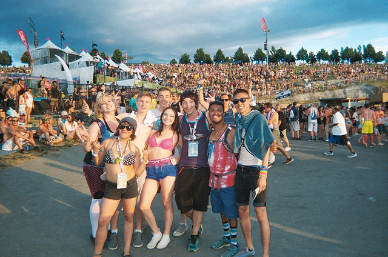

23:31
so bloody cool
23:46
#dancing all night @Boomtown
00:03
what's going on? police at #Boomtown
00:45
So, I had never been to Boomtown before, but I thought fuck it I'll give it a go. I went to the line and saw a massive queue. I debated leaving right away, because the air was bitter - not normal for me a Brazilian. I was persuaded to stay and as I approached the door I saw the freakiest bouncer, the one I had heard about - c**t. He studied each one by one as they went past him, finally it got to my turn. I looked him in his eye (surrounded by tattoos) he waved has hand and in I went to the pounding tunes. The night was full, people were properly spaced out - you could see it in the pupils, but everyone was friendly. I went to the toilet and was offered some stuff, but I didn’t know the guy so left it. I have some experience with Ketamine, but not in the club. The tunes upstairs were even better than those that greeted me. Bloody loved the night!
23:31
We danced so hard, yesterday at Boomtown
10:30
Ketamine use has resulted in the deaths of two individuals in the last month. This is due to kidney failure following long term use. Other deaths have occured due to a blend of ketamine and alcohol.
comments